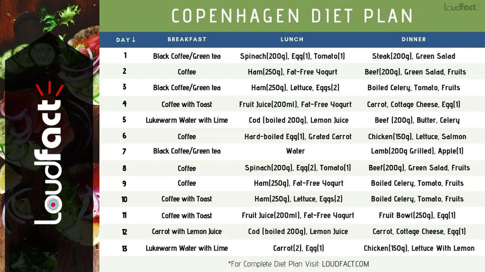

Are you looking to lose weight fast for an upcoming event? You may have listened to the buzz about the Copenhagen diet plan all over the internet and probably wondered what is Copenhagen Diet Plan.
Well, Copenhagen Diet is a 13-Day Diet Plan, consisting of foods that are high in protein and low in fat. It is also known as the Royal Danish Hospital Diet which is recognized as “13 Day Diet On The Way To Paradise”.
Most people think it is one of those diets that promise to slim you down over a short period, so let’s find out the facts associated with it along with plans to detox and lose weight.
Copenhagen Diet is a Swedish diet plan consisting of foods that are high in protein and low in fat. This diet also referred to as the 13-Day Diet Plan is one of the buzzing diets these days to slim down over a short period.
It is one of the very rigorous diet plans that people refer to lose weight within a short period. Copenhagen Diet consists of a fixed and specific menu that you simply cannot modify. Here are the pros and cons that you should know before following it:
Pros:
Cons:
Take a Print of the below plan and stick it to an effective place to know it regularly.
Breakfast: 1 Cup of Black Coffee or Green tea with No Sugar Added
Lunch: 200g of Boiled Spinach, One Hard-boiled Egg, and One Tomato
Dinner: 200g Steak (any kind, grilled), with Green Salad, Lemon Juice, and Oil(dressing)
Breakfast: Coffee with a Single Cube of Sugar
Lunch: 250g of Ham with One Small Bowl of Fat-free Yogurt
Dinner: 200g of Beef (Roast) with Green Salad, Lemon Juice and Oil(dressing), Fruits of your choice
Breakfast: 1 Cup of Black Coffee or Green Tea with No Sugar Added
Lunch: 1 Slice of Ham, with 1 Cup of Lettuce and 2 Hard-boiled Eggs
Dinner: Boiled Celery, Tomato (Soup or raw), 1 Fruit of your choice
Breakfast: Coffee with a single cube of sugar (either brown/white) and a slice of plain toast
Lunch: 200ml of any fruit juice (freshly squeezed or all-natural) with 1 cup of low-fat yogurt
Dinner: 1 Hard Boiled Egg, 1 large grated carrot, 100ml cottage cheese
Breakfast: One Glass of Lukewarm Water with lime
Lunch: 200g of cod (boiled) with lemon juice
Dinner: 200g of beef (roast), with butter and celery (1 piece)
Breakfast: Coffee with a single cube of sugar (either brown/white) and a slice of plain toast
Lunch: 1 Hard-boiled egg, Grated Carrot
Dinner: 150g skinless chicken breast grilled or boiled, lettuce with salmon dressing
Breakfast: 1 Cup of Black Coffee or Green tea with no sugar added
Lunch: Skip lunch by drinking lots of water
Dinner: 200g of lamb (grilled) with one apple
Breakfast: Coffee with a single cube of sugar (either brown/white)
Lunch: 2 Hard-boiled eggs, 200g frozen spinach, boiled 1 tomato
Dinner: 200g of beef (roast) with green salad, lemon juice, and oil (dressing)
Breakfast: Coffee with a single cube of sugar (either brown/white)
Lunch: 200g of ham with 1 cup of yogurt
Dinner: Boiled Celery, Tomato (Soup or raw), 1 fruit
Breakfast: Coffee with a single cube of sugar (either brown/white) with a plain slice of toast
Lunch: 1 slice of ham with a cup of lettuce and two hard-boiled eggs
Dinner: 1 tomato, with 1 piece of celery (boiled) and 1 piece of fruit (your choice)
Breakfast: Coffee with a single cube of sugar (either brown/white) with a plain slice of toast
Lunch: 200ml orange juice or an apple, 1 fat-free yogurt
Dinner: 250g of fruit (assorted bowl) with 1 boiled egg and carrot shavings (1 piece)
Breakfast: 1 carrot with lemon juice
Lunch: 200g of cod (boiled) with lemon juice
Dinner: 1 Hard Boiled Egg, 1 large grated carrot, 100ml cottage cheese
Breakfast: One Glass of Lukewarm Water with lime
Lunch: 2 eggs (cooked the way you like it) with carrot shavings (single piece)
Dinner: 250gm chicken breast grilled or boiled, lettuce with lemon dressing